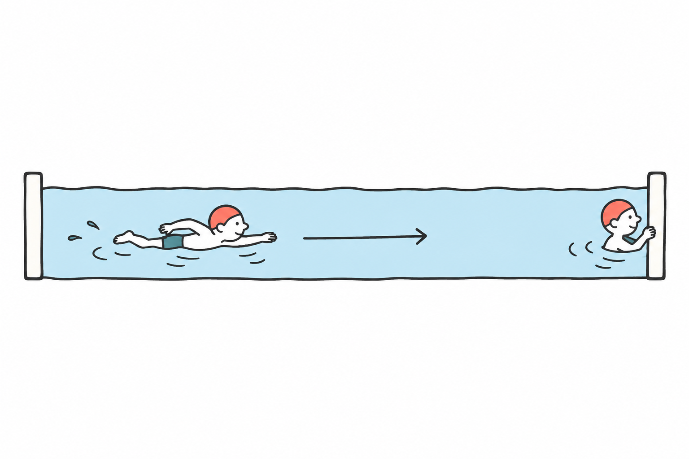
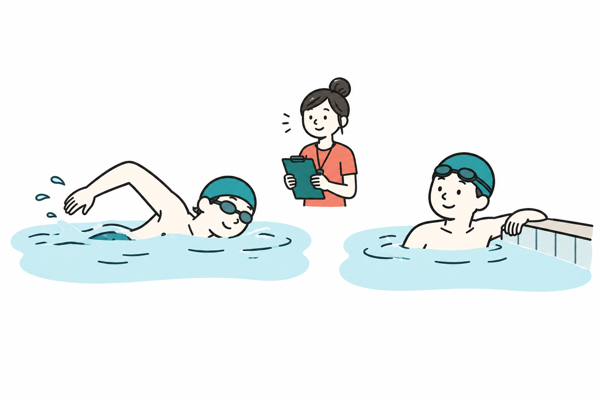
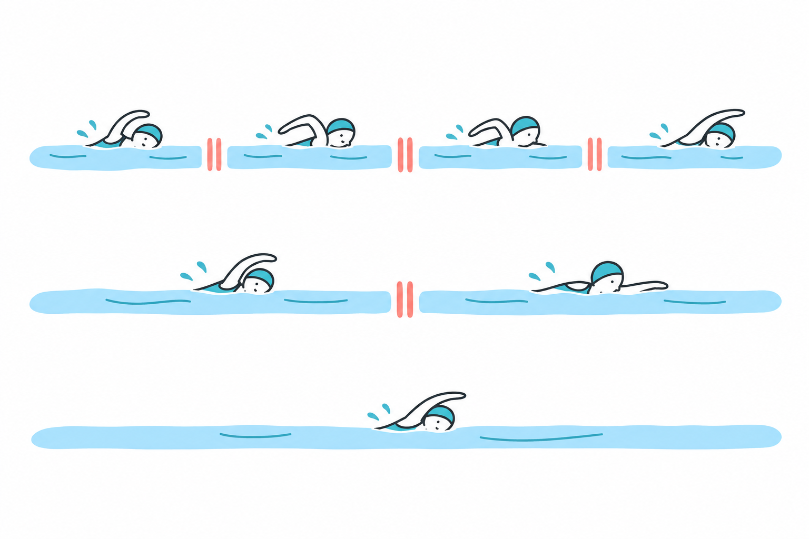
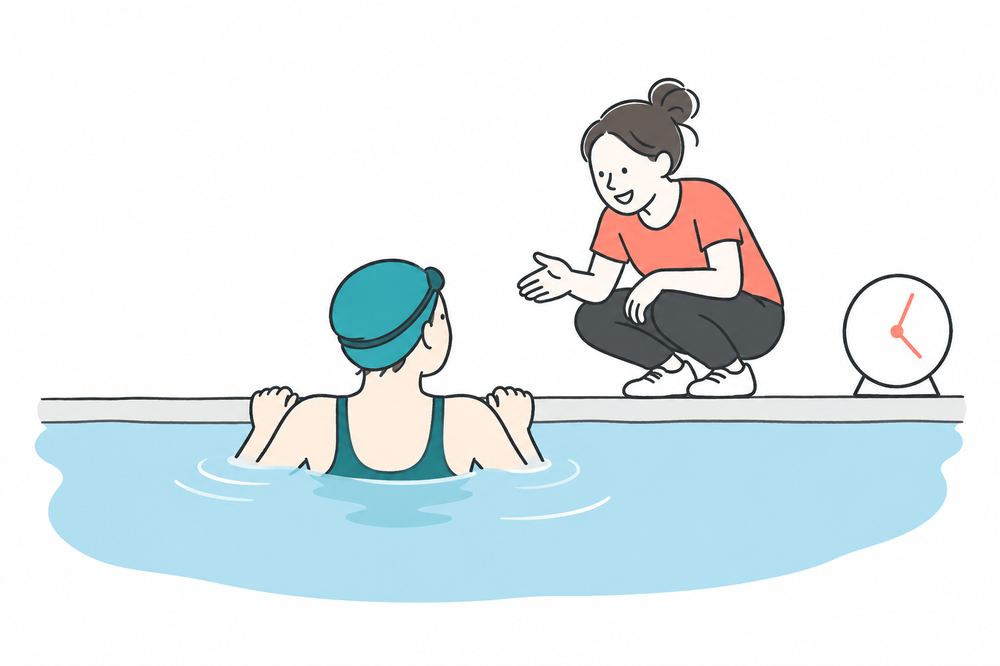
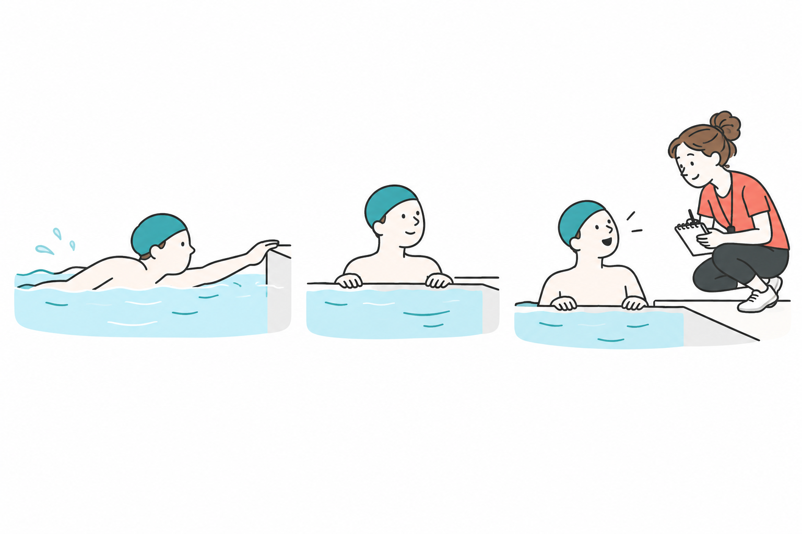

SWIMMING RESEARCH / 10
泳ぐ練習、途中で休んでもいい？
2026年10月24日 · 泳ぐ区間と休み方

「せっかくプールに来たのだから、なるべく止まらず泳ぎたい」。そう考えて、壁に着いてもすぐ次へ進んでいませんか。反対に、隣の人が休まず泳ぐのを見て、途中で休む自分は練習が足りないと感じることもあるかもしれません。
休む時間も、練習の組み立ての一部です。 続けて泳ぐことと、短く分けて泳ぐことでは、同じ距離でも取り組める速さや、途中で確かめられることが変わります。今日は、研究を手掛かりに休み方を整理し、次に壁へ着いたとき、何を確かめてから出発するかまで考えてみましょう。
1 同じ距離でも、中身は同じとは限らない
仕組みをつかむ仮の例として、合計100mを考えます。100mを続けて泳ぐ方法と、25mずつ4回泳ぎ、間で休む方法があります。25mプールなら、どちらも片道4回分の距離です。
短い区間に分けると、壁で「今は何を確かめたか」を整理してから次へ進めます。一方、続けて泳げば、途中で止まらずに自分のペースを保つ様子を確かめられます。ここに、使い分ける理由があります。
同じ100m、休む場所が違う

説明の仮例：25mプール、合計100m
続けて泳ぐ：25m → 25m → 25m → 25m
分けて泳ぐ：25m → 休む → 25m → 休む → 25m → 休む → 25m
どちらも片道4回分。休みが入る位置は3か所。
途中で止まらず、ペースの保ち方を確かめる。
間で休み、前の泳ぎと次に見る一点を整理する。
例えば、泳ぎの後半になると手の入れ方が慌ただしくなると感じた日。短く区切れば、壁で振り返ってから、次の一本でも同じ点を見ることができます。落ち着いたペースを長く保ちたい日には、余裕のある距離を続けて泳ぐ方法もあります。まず決めたいのは、今日何を確かめたいかです。
米国の水泳団体U.S. Masters Swimmingの指導記事も、練習の目的を決め、泳力や速さに合わせて休息を組み込むよう説明しています。最大速度を出す練習と、長くペースを保つ練習では、必要な休み方が異なるという指導上の整理です。USMSの解説
2 休みを入れれば、必ず楽な練習になる？
休みがあると、運動の負担が小さい。そう決めつけることもできません。休みをはさむことで、速い泳ぎを繰り返せる場合もあるからです。
Almeidaらは2022年、十分にトレーニングした競泳選手22人を対象に、設定した速いペースで「続けて泳ぐ」と「100mごとに15秒休む」を比較しました。どちらも、そのペースを維持できる限界まで行う実験です。後者では、より長い距離を泳ぎ、酸素を多く使う状態にいた時間も長くなりました。原著
休みがあっても、高い負荷になる場合がある

十分に練習した選手22人が、各自の設定ペースで限界まで泳ぐ。
同じ設定ペースの研究。泳いだ距離と、酸素を多く使う状態の時間が長くなった。
この結果を練習の組み立てとして読むと、休みを入れることで、そのペースで次の区間にも取り組めたと考えられます。泳いでいない時間があるからといって、練習全体の負荷が必ず小さいわけではないのです。
ただし、選手が限界まで行った一回の実験です。15秒休みが一般の泳者に適切とは言えず、この練習を続けたときの上達を確かめた研究でもありません。借りたいのは秒数ではなく、目的に合わせて休みを組み込む見方です。
自分の練習では、休むかどうかだけでなく、どのくらいの速さで、どこまで泳ぎ、何回繰り返すのかも一緒に見ます。短く分けた分をすべて全力に変えてしまえば、楽に動きを確かめる練習とは違うものになります。
3 合計距離とペースが同じでも、分け方は影響する
では、速さも合計距離もそろえたら、同じ練習になるでしょうか。Funaiらは、全国レベルの男子大学選手11人について、各自の記録から設定した同じペースで、合計2000mを三通りに分けて比較しました。
100mを20回、間の休みは15秒。200mを10回なら30秒、400mを5回なら60秒です。長い区間ほど、心拍数と本人が感じるきつさが高く、400mずつ泳ぐ条件では、一かきの周期に進む距離が最も短くなりました。原著の抄録
合計2000mでも、分け方が違う

上の絵は区切り方のイメージです。研究の距離・回数は、下の帯図で確認してください。
男子大学選手11人の研究条件／推奨距離ではありません
100m × 20回＝2000m
区間の間は15秒休む
200m × 10回＝2000m
区間の間は30秒休む
400m × 5回＝2000m
区間の間は60秒休む
帯は1回に泳ぐ距離を同じ縮尺で示します。上達の大きさではありません。
20回。間の休みは15秒。
10回。間の休みは30秒。
5回。間の休みは60秒。
「一かきの周期」は、例えば右手が水に入ってから、次に右手が入るまでのひとまとまりです。研究では、その一周期の間に身体がどれだけ前へ進んだかを測っています。単に腕を大きく動かしたかを表す数字ではありません。
同じ2000mでも、長い区間をまとめて泳ぐ条件では、きつさや一周期の進み方が違っていました。合計距離だけを見ていたら、この違いは見落としてしまいます。ただし、区間の長さと休む秒数が両方変わっているため、休息だけの効果ではありません。一周期の距離だけで、泳ぎ全体の良し悪しを決めることもできません。
日々の練習では、「今日は何m泳いだか」に加え、「どの長さで区切ったか」「どのくらい休んだか」を残すと、後から比較しやすくなります。同じ合計距離でも、前回より落ち着いて泳げたなら、区切り方や休み方がどう違ったかも振り返れます。
4 「休み20秒」と「1分ごとに出発」は違う
練習の説明で混乱しやすいのが、時計の使い方です。「20秒休む」なら、壁に到着してから20秒を数えて次へ出ます。一方、「1分ごとに出発」なら、前に出発した時刻から1分後に次へ出ます。
仮に30秒で泳ぎ終えた人が、1分ごとに出発すると、残り30秒が休みです。40秒かかった人なら、休みは20秒。同じ出発間隔でも、泳ぐのにかかった時間によって、休める長さは違います。
では「到着してから20秒休む」ならどうでしょう。30秒で泳ぎ終えたら、20秒休んで、最初の出発から50秒後に次へ出ます。40秒かかったら、次は60秒後です。この方式では休む長さが同じで、次に出発する時刻が変わります。
1分ごとに出発する方式では、最初は30秒で泳げても、後半に40秒かかれば、同じ人の休みが10秒短くなります。泳ぐ時間が延びたとき、休みも短くなる組み方です。「同じメニューだから、ずっと同じ負担」とは限りません。
休む秒数？ 出発する間隔？

時計の読み方の仮例／推奨メニューではありません
① 1分ごとに出発する
次の出発を60秒にそろえる。休みは変わる。
泳ぐ30秒 ＋ 休む30秒 → 60秒で次へ
泳ぐ40秒 ＋ 休む20秒 → 60秒で次へ
② 到着してから20秒休む
休む長さを20秒にそろえる。出発時刻は変わる。
泳ぐ30秒 ＋ 休む20秒 → 50秒で次へ
泳ぐ40秒 ＋ 休む20秒 → 60秒で次へ
緑＝泳ぐ時間 桃＝休む時間 白＝次の出発後（比較の対象外）
泳ぐ時間が長くなると、次の出発までの休みが短くなる。
到着後の休みは同じ。次に出発する時刻が変わる。
ここでの秒数は時計の読み方を示す仮例です。動きを落ち着いて観察したい日は、到着後に休む方式を選ぶと、出発時刻に追われず休みを確保しやすくなります。グループ練習なら、コーチに「到着してから休みを取る形にできますか」と相談してみましょう。
休憩中は、ほかの泳者の到着やターンを妨げない場所へ寄ります。時計を気にして無理に出発するより、レーンの流れと自分の状態を確認してから再開することが大切です。
5 次回は、壁で一つだけ確かめる
ここからは研究をそのまま再現するメニューではなく、本記事の観察案です。自力で余裕をもって泳ぎ切れる短い区間を選び、慣れたプールで行います。子どもや初心者は、指導者と距離や休む場所を決めてください。
まず、普段の楽な速さで泳ぎます。壁に着いたら、呼吸と気持ちが落ち着くまで休みます。その間に振り返るのは一つだけ。例えば、「後半も、最初と同じように慌てず手を入れられたか」。頭、腕、脚を一度に直そうとせず、一つの動きに絞ります。
壁で一つだけ振り返り、次の一本へ

- 1短い区間を楽に泳ぐ
自力で余裕をもって泳げる距離を選ぶ。
- 2壁で休んで一つ振り返る
例：後半も慌てず手を入れられたか。
- 3次も楽な速さで確かめる
最初から慌ただしければ速さを下げる。後半からなら休みと距離を指導者に相談する。
次も同じ距離を、同じくらいの楽な速さで泳ぎます。前の泳ぎで気づいた一点を思い出します。休んだからといって、次を速く泳ぐ義務はありません。休みには、前の一本を振り返り、次の一本の見る場所を決める役割も持たせられます。
この「楽に短く泳ぐ→休む→一つ振り返る→同じ条件で確かめる」を、一組として考えます。落ち着いてできるなら、まずその条件のまま感覚を確かめましょう。
それでも泳ぎが慌ただしい場合は、速さを下げるか、指導者と区間の長さを見直します。一度に両方変えず、どちらか一つを調整すると、何が関係しそうかを見分けやすくなります。
「休めば元に戻るはず」と繰り返し続ける必要はありません。休んでも苦しさが残る、痛みやめまいがある場合は練習をやめ、必要な助けを求めてください。回数を達成することより、落ち着いて観察できる範囲を守ります。
止まらず泳げた距離は、一つの記録です。同時に、区切って泳いだから気づけることもあります。次の練習では、合計距離の横に「後半も慌てず手を入れられた」のように、確かめたことを一言残してみてください。
壁で止まったとき、「休んでしまった」で終わらせず、「次の一本では、何を見る？」と問い直す。休む時間を、その日の練習の目的につなげてみましょう。
参考資料と確認範囲
- Almeida, T. A. F., et al. (2022). Time limit and V̇O2 kinetics at maximal aerobic velocity: Continuous vs. intermittent swimming trials. Frontiers in Physiology, 13, 982874. 本文 — 対象、方法、結果、考察を確認。高強度の短期比較で、長期の上達効果の実証ではありません。
- Funai, Y., et al. (2025; online 2024). Biophysical analyses of various interval training sets at critical swimming velocity. Journal of Sports Medicine and Physical Fitness, 65(2), 163–170. PubMed抄録 — 抄録を確認。本文の詳細な測定区間等は未確認です。
- Terry Heggy (2023). How to Write a Swimming Workout. U.S. Masters Swimming. 公式指導記事 — 記事本文を確認。研究論文ではなく、練習設計についての指導者の解説として参照しました。